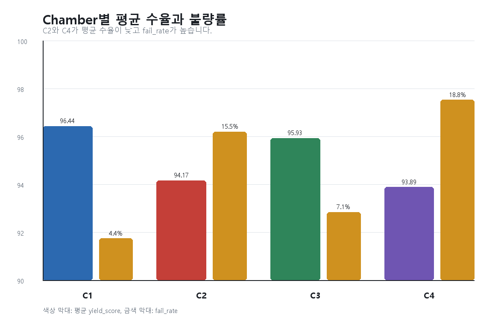
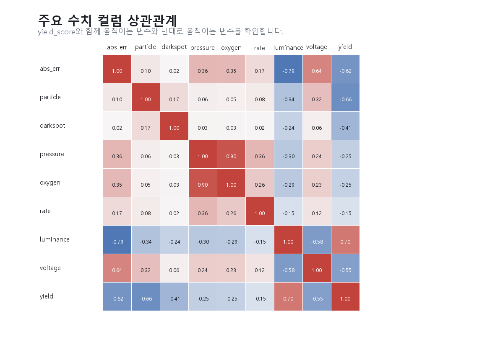

1. 데이터와 컬럼 이해
분석 전 원본 CSV의 29개 컬럼을 확인했다. 핵심 목표 변수는 yield_score와 pass_fail이고, 원인 후보는 thickness_error_nm, particle_count, dark_spot_count, chamber/zone, 공정 조건 컬럼이다.
Chamber 요약
| yield_mean | thickness_error_mean | abs_error_mean | fail_rate | particles | darkspots | |
|---|---|---|---|---|---|---|
| chamber | ||||||
| C1 | 96.436 | 0.335 | 1.143 | 0.044 | 1317 | 373 |
| C2 | 94.167 | 2.047 | 2.151 | 0.155 | 1925 | 435 |
| C3 | 95.929 | -0.424 | 1.234 | 0.071 | 1936 | 408 |
| C4 | 93.885 | 1.780 | 2.124 | 0.188 | 2273 | 525 |
Zone 요약
| yield_mean | abs_error_mean | fail_rate | |
|---|---|---|---|
| zone | |||
| center | 96.082 | 1.335 | 0.055 |
| edge | 94.439 | 1.932 | 0.150 |
| middle | 96.132 | 1.222 | 0.062 |
2. 그래프 기반 인사이트

C2와 C4는 평균 수율이 낮고 fail rate가 높다. 두께 오차 평균도 양의 방향으로 커서 over-deposition 가능성을 의심할 수 있다.

평균 yield_score와 fail_rate를 함께 보면 C4가 가장 위험하고 C2가 다음 위험군이다.

none을 제외한 결함 중 particle이 가장 많다. 결함 개선 우선순위는 particle, thick_spot, map_hotspot/dark_spot 순서가 적절하다.

yield_score와 음의 상관이 큰 변수는 particle_count, abs_error_nm, voltage_v, dark_spot_count다. 반대로 luminance_cd_m2는 yield_score와 양의 상관이 강하다.
3. 결함 유형 빈도
| count | pct | |
|---|---|---|
| defect_type | ||
| none | 23017 | 93.656 |
| particle | 957 | 3.894 |
| thick_spot | 408 | 1.660 |
| map_hotspot | 97 | 0.395 |
| dark_spot | 95 | 0.387 |
| thin_spot | 2 | 0.008 |
4. 통계 분석
표준화한 수치 변수로 OLS를 수행했다. p-value는 표본 수가 충분히 큰 조건에서 정규근사로 계산했다.
| term | coef | t_approx | p_norm_approx |
|---|---|---|---|
| intercept | 0.000 | 0.000 | 1.000 |
| abs_error_nm | -0.554 | -198.930 | <0.001 |
| particle_count | -0.553 | -210.600 | <0.001 |
| dark_spot_count | -0.311 | -119.160 | <0.001 |
| pressure_mTorr | 0.006 | 0.860 | 0.387 |
| substrate_temp_c | 0.001 | 0.240 | 0.807 |
| oxygen_flow_sccm | -0.017 | -2.570 | 0.010 |
| deposition_rate_a_s | -0.001 | -0.230 | 0.816 |
중급 결론
수율 저하의 1차 원인 후보는 particle, dark spot, 두께 절대오차다. 공정 조건 중 pressure 자체는 다른 변수를 같이 넣으면 유의하지 않았고, oxygen flow는 약하지만 유의한 신호를 보였다. 따라서 chamber C2/C4의 particle 관리, 두께 보정, edge 균일도를 우선 점검하는 결론이 타당하다.